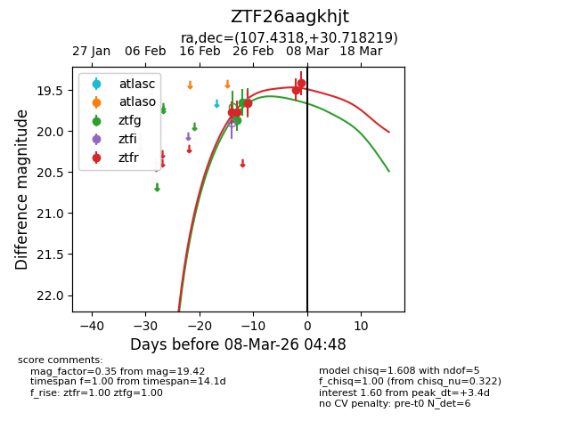
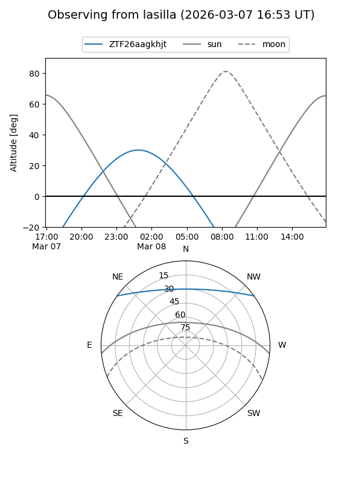
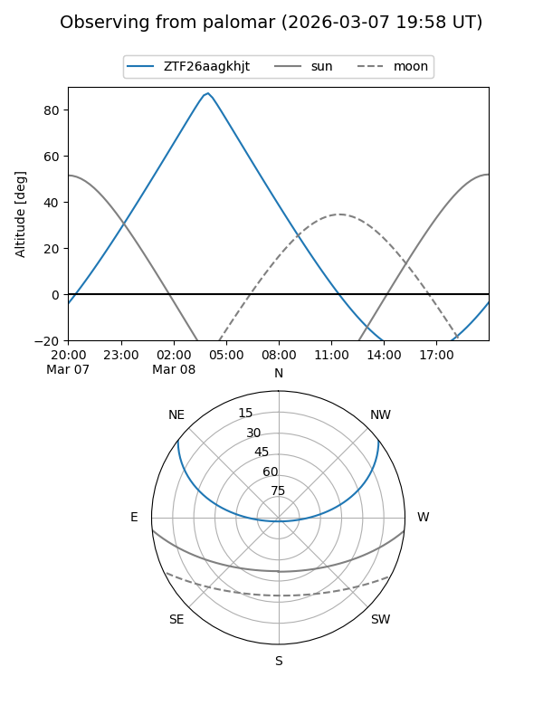
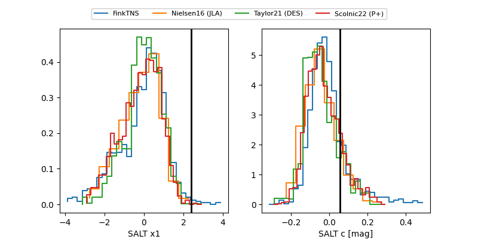

ZTF26aagkhjt
Target ZTF26aagkhjt at 2026-03-08 04:49
Aliases and brokers:
FINK: link
Lasair: link
ALeRCE: link
alt names
ZTF26aagkhjt (ztf,fink_ztf)
Coordinates:
equatorial (ra, dec) = 107.4318,+30.71822
equatorial (HMS+DMS) = 07:09:43.63,+30:43:05.59
galactic (l, b) = (186.6406,+17.09260)
Flags:
Photometry:
last ztfg=19.65, ztfr=19.42
3 ztfg, 5 ztfr detections
Lightcurve

Visibility


Additional plots
